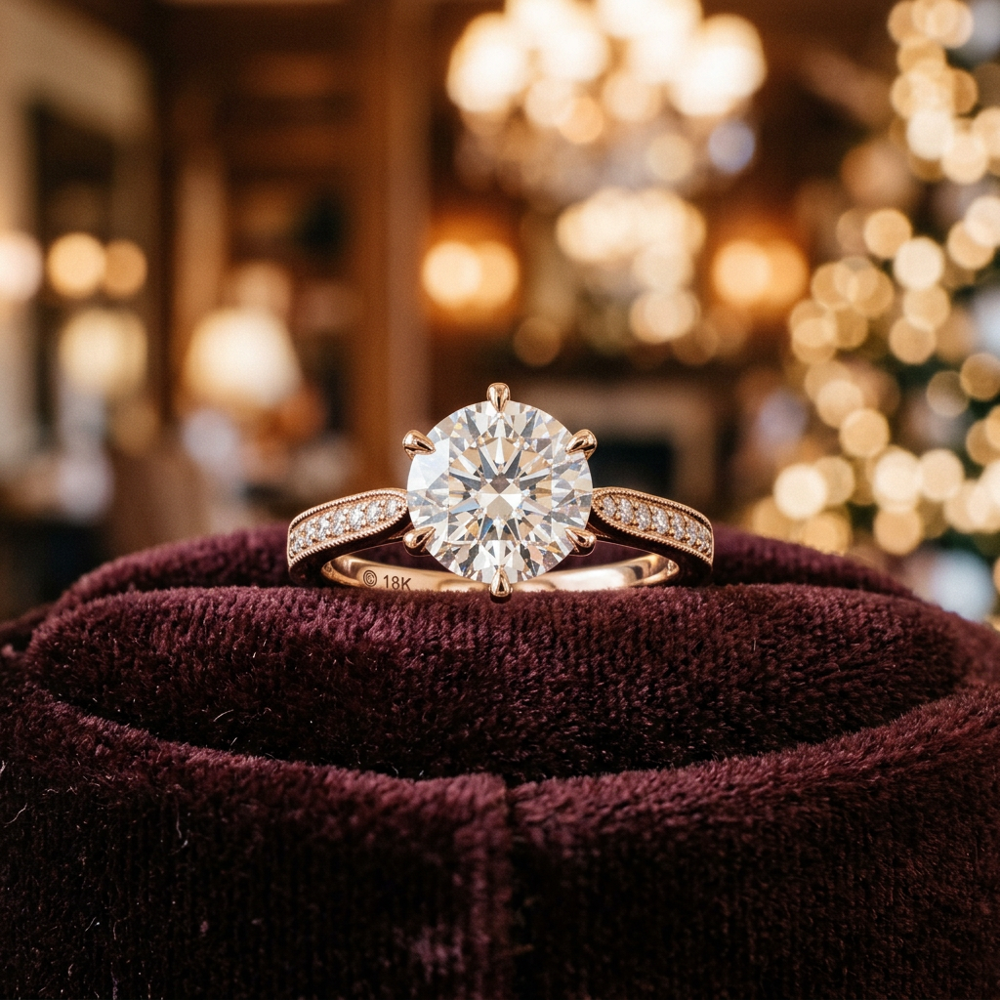
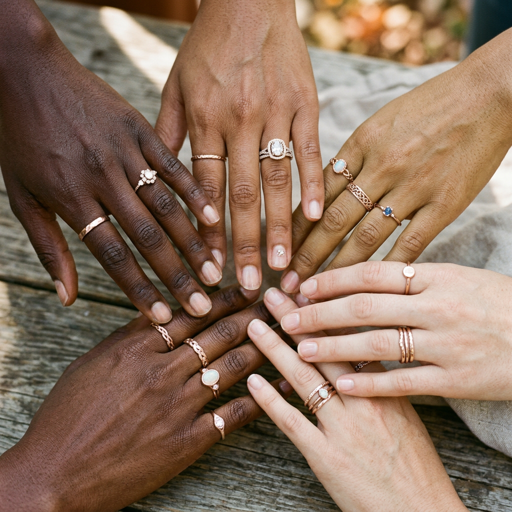
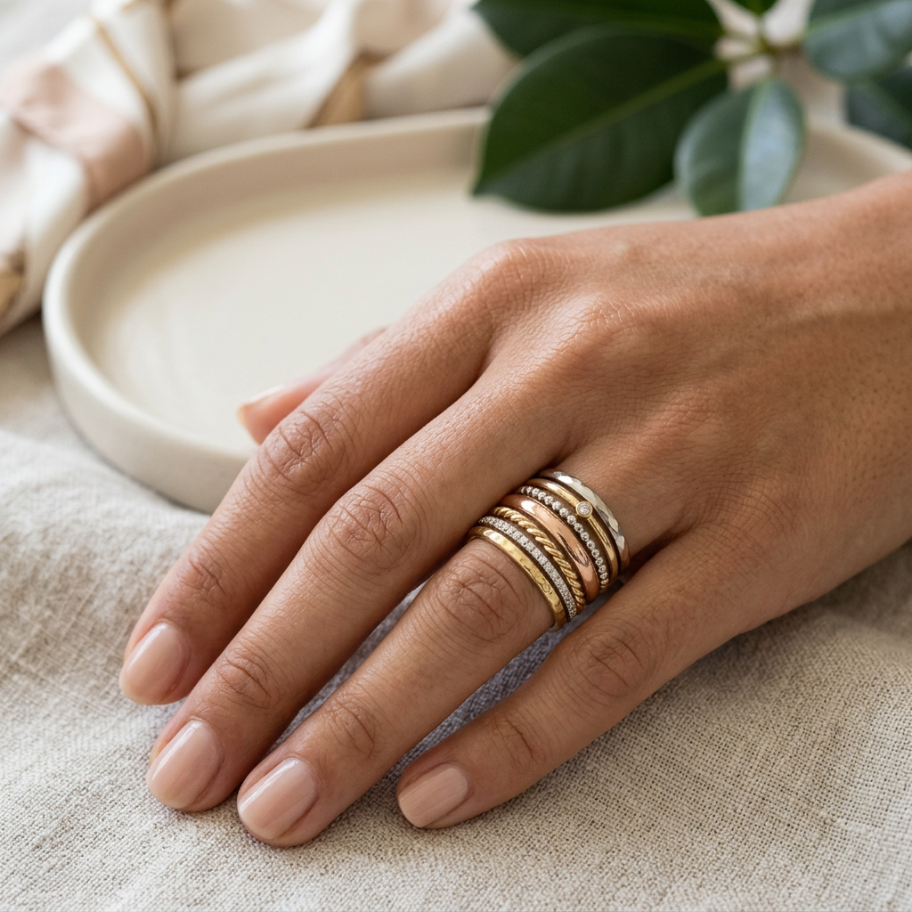

The Ultimate Guide to Rose Gold Ring Jewellery: Timeless Elegance for the Modern Collector
The Irresistible Allure of Rose Gold
For decades, jewelry enthusiasts were forced to choose between the traditional warmth of yellow gold or the clinical coolness of white gold. But there is a third option that has quietly become the hallmark of sophisticated taste: rose gold ring jewellery. This pink-hued metal offers a romantic, vintage aesthetic that manages to feel entirely modern at the same time.
However, the journey to finding the perfect rose gold ring is fraught with questions. Is it real gold? Does it tarnish? Will it suit your skin tone? If you are a high-intent buyer looking to invest in a piece that transcends fleeting trends, you need more than just a beautiful photo. You need a masterclass in the metallurgy and psychology of rose gold.

Understanding the Alloy: What Makes it 'Rose'?
The first thing any serious collector must understand is that rose gold does not exist in nature. Pure 24k gold is always yellow. The stunning blush color we associate with rose gold ring jewellery is the result of a meticulous alloying process. By mixing pure gold with copper and a small amount of silver, craftsmen create a metal that is not only beautiful but significantly more durable than pure gold.
The Purity Paradox
When shopping for rose gold, you will typically encounter 14k and 18k options. Understanding the difference is critical for your investment:
- 18k Rose Gold: Contains 75% pure gold. It has a softer, more subtle champagne-pink hue. It is more prestigious but slightly softer.
- 14k Rose Gold: Contains 58.3% pure gold. Because it has a higher copper content, the pink color is more vibrant and the metal is significantly harder, making it the ideal choice for everyday wear and engagement rings.
The Psychology of the Glow: Why It Suits Everyone
One of the primary reasons rose gold ring jewellery has seen a massive resurgence is its incredible versatility. While silver and white gold can look washed out on pale skin, and yellow gold can sometimes clash with certain undertones, rose gold is the 'universal donor' of the jewelry world.
The copper undertones in the metal pull out the natural flush in your skin, creating a cohesive look that feels like an extension of the wearer rather than an accessory. Whether you have a cool, olive, or deep skin tone, rose gold provides a flattering warmth that other metals simply cannot replicate.

Durability and Longevity: A Lifetime Investment
Many buyers worry that the 'trendiness' of rose gold means it won't hold its value or physical integrity. The reality is quite the opposite. Because copper is one of the most durable metals on earth, rose gold is actually tougher than both yellow and white gold. It does not require the frequent rhodium plating that white gold demands to stay bright.
Over time, high-quality rose gold ring jewellery develops a slight, beautiful patina. This deepening of color over the years is highly sought after by vintage collectors, as it gives the piece a 'lived-in' soul that brand-new yellow gold lacks.
How to Spot Quality in Rose Gold Ring Jewellery
To ensure you are making a high-conversion purchase that retains its value, look for these three pillars of quality:
- Hallmarking: Ensure the piece is stamped with its karat weight (e.g., 585 for 14k or 750 for 18k). This is your guarantee of gold content.
- Symmetry and Setting: In rose gold pieces, the setting should be seamless. Because the metal is dense, look for precision in the prongs and the shank of the ring.
- The 'Copper' Test: If a ring looks overly orange or 'brassy,' it may have an imbalance in the alloy or be a cheap plating. Genuine high-end rose gold should have a sophisticated, creamy pink luster.
Styling and Stacking: The Modern Approach
The modern way to wear rose gold ring jewellery is through 'mixed metal' stacking. Gone are the rules that say you must stick to one color. Rose gold acts as the perfect bridge between a white gold wedding band and a yellow gold heirloom watch. It softens the contrast between different metals, allowing you to build a jewelry wardrobe that is eclectic yet curated.

The Verdict: Is Rose Gold Right for You?
If you are looking for a piece of jewelry that offers the durability of an industrial metal with the romance of a sunset, rose gold ring jewellery is the definitive choice. It is a purchase that rewards the buyer with low maintenance, universal flattery, and a timeless appeal that will look as relevant decades from now as it does today. When you invest in rose gold, you aren't just buying a ring; you are securing a piece of enduring artistry.